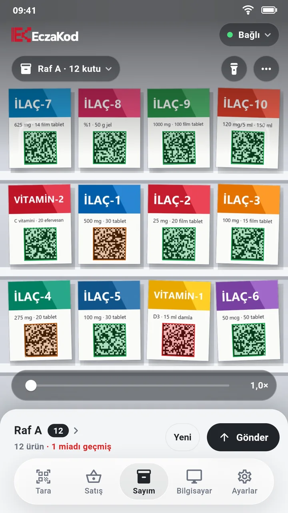

Eczane stok sayımı rafın önünde biter
EczaKod ile kamerayı raf boyunca gezdirin; her karekodlu kutu bir kez sayılır. Sayım bitince tek dokunuşla eczane programınızın sayım ekranına yazılır. Miadı geçmiş ve yaklaşan kutular sayarken renginden belli olur.
Kutu kutu okutmak yerine rafı tarayın
El tipi okuyucuyla sayımda her kutu tek tek okutulur, atlanan ya da iki kez okunan kutu sonradan aranır. EczaKod'da kamera bir karede birden çok karekodu okur ve aynı kutu tekrar görünse de sayı artmaz.
- Adlı bir sayım başlatın "Raf A", "Depo" ya da "Soğuk zincir" gibi; sayımlar arasında tek dokunuşla geçilir.
- Rafı tarayın Kamerayı raf boyunca gezdirin. Her karekodlu kutu bir kez sayılır.
- Programın sayım ekranını açın İmleç kod alanında olsun.
- Gönder'e basın Kodlar 100'lük parçalar hâlinde sırayla yazılır; ilerleme telefonda görünür. Yarıda kalırsa kaldığı yerden devam edilir.

Miad takibi sayımla birlikte gelir
Karekoddaki son kullanma tarihi her kutuda okunur. Kamerada çerçeve rengi miadı söyler:
- Kırmızı: miadı geçmiş
- Turuncu: miadı yakın. "Yakın" sınırını eczanenize göre seçin: 3, 6 ya da 12 ay.
- Yeşil: miadı uzun
Sayım ayrıntısında ürünler miadı en yakın olandan başlar; barkod, seri numarası ya da lot ile arama yapılır. Miadı geçmiş ve yakın kutular Excel'de açılan bir rapor olarak, sayımın kendisi TXT olarak paylaşılabilir.
Sayım kaybolmaz
- Uygulama kapansa ya da telefon yeniden başlasa da sayım kaldığı yerden sürer; gönderdikten sonra da silinmez.
- Rafta beklenen kutu sayısını girip sayımla karşılaştırabilirsiniz.
- Sayım için internet gerekmez; telefon ve bilgisayar eczanenin Wi-Fi ağı üzerinden konuşur.
- Birden çok telefonla raflar paylaştırılabilir; her telefon kendi sayımını gönderir.
Sık sorulanlar
Barkodlu ürünler de sayılır mı?
Sayım eczane programına nasıl aktarılır?
Hangi eczane programlarıyla çalışır?
Ücreti ne kadar?
Ücretsiz deneyin
Bilgisayar programı her zaman en güncel sürümle iner. Kurulum yaklaşık iki dakika sürer.
Windows için indirTelefon uygulaması App Store ve Google Play'de: ilk ay ücretsiz deneyin.